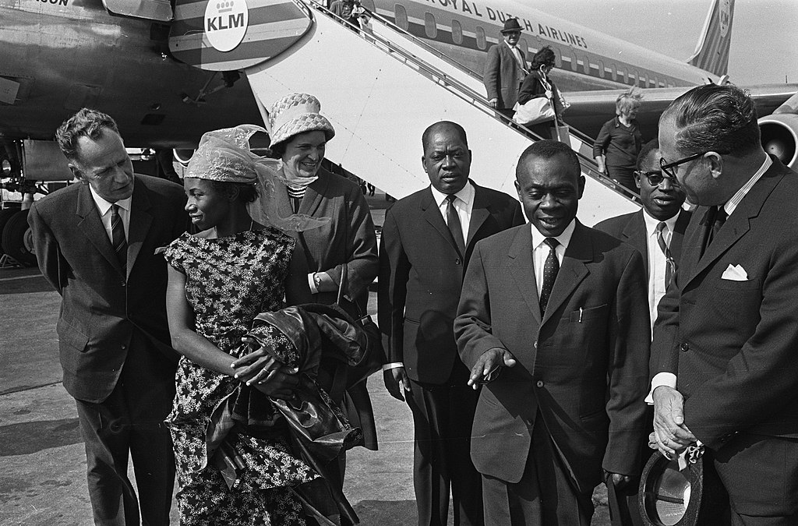

DR. John Ngu Foncha
The man who united cameroon

Arrival John N. Foncha at Schiphol
Here's a time line of MR. J.N Foncha
- 1916 Was born in Bamenda
- 1955 He founded the Kamerun National Democratic Party (KNDP)
- 1959 He became Premier of the British Cameroons
- 1961-1965 He concurrently served as 5th Prime Minister of
Cameroon and Vice-President of the Federal Republic of Cameroon.
- 1994 He led a delegation of the Southern Cameroons National Council (SCNC)
to the United Nations to request its backing of the movement's drive for greater
autonomy in Cameroon's two English-speaking provinces.
- 1999 He died in Bamenda at the age of 82
"DR. John Ngu Foncha was one of the most important
people in the reunification of the french cameroon
and britain cameroon"
If you have time, you should read more about this incredible human being on his wikipedia entery